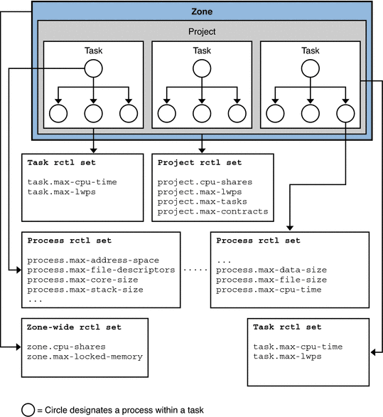
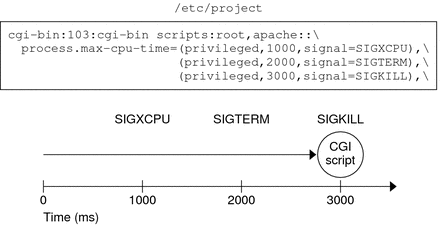

Resource Controls Flags and Actions
This section describes flags, actions, and signals associated with resource controls.
rlimit, Resource Limit
rlimit is process-based. rlimit establishes a restricting boundary on the consumption of a
variety of system resources by a process. Each process that the process creates
inherits from the original process. A resource limit is defined by a pair
of values. The values specify the current (soft) limit and the maximum (hard)
limit.
A process might irreversibly lower its hard limit to any value that is
greater than or equal to the soft limit. Only a process with
superuser ID can raise the hard limit. See setrlimit() and getrlimit().
The rlimit structure contains two members that define the soft limit and hard
limit.
rlim_t rlim_cur; /* current (soft) limit */
rlim_t rlim_max /* hard limit */
rctl, Resource Control
rctl extends the process-based limits of rlimit by controlling resource consumption by
processes, tasks, and projects defined in the project database.
Note - The rctl mechanism is preferred to the use of rlimit to set resource
limits. The only reason to use the rlimit facility is when portability is
required across UNIX platforms.
Applications fall into the following broad categories depending on how an application deals
with resource controls. Based on the action that is taken, resource controls can
be further classified. Most report an error and terminate operation. Other resource controls
allow applications to resume operation and adapt to the reduced resource usage. A
progressive chain of actions at increasing values can be specified for each resource
control.
The list of attributes for a resource control consists of a privilege level,
a threshold value, and an action that is taken when the threshold
is exceeded.
Resource Control Values and Privilege Levels
Each threshold value on a resource control must be associated with one of
the following privilege levels:
- RCPRIV_BASIC
Privilege level can be modified by the owner of the calling process. RCPRIV_BASIC is associated with a resource's soft limit.
- RCPRIV_PRIVILEGED
Privilege level can be modified only by privileged (superuser) callers. RCPRIV_PRIVILEGED is associated with a resource's hard limit.
- RCPRIV_SYSTEM
Privilege level remains fixed for the duration of the operating system instance.
Figure 5-2 shows the timeline for setting privilege levels for signals that are defined
by the /etc/project file process.max-cpu-time resource control.
Local Actions and Local Flags
The local action and local flags are applied to the current resource control
value represented by this resource control block. Local actions and local flags are
value-specific. For each threshold value that is placed on a resource control, the
following local actions and local flags are available:
- RCTL_LOCAL_NOACTION
No local action is taken when this resource control value is exceeded.
- RCTL_LOCAL_SIGNAL
The specified signal, set by rctlblk_set_local_action(), is sent to the process that placed this resource control value in the value sequence.
- RCTL_LOCAL_DENY
When this resource control value is encountered, the request for the resource is denied. Set on all values if RCTL_GLOBAL_DENY_ALWAYS is set for this control. Cleared on all values if RCTL_GLOBAL_DENY_NEVER is set for this control.
- RCTL_LOCAL_MAXIMAL
This resource control value represents a request for the maximum amount of resource for this control. If RCTL_GLOBAL_INFINITE is set for this resource control, RCTL_LOCAL_MAXIMAL indicates an unlimited resource control value that is never exceeded.
Global Actions and Global Flags
Global flags apply to all current resource control values represented by this resource
control block. Global actions and global flags are set by rctladm(1M). Global actions
and global flags cannot be set with setrctl(). Global flags apply to all resource
controls. For each threshold value that is placed on a resource control, the
following global actions and global flags are available:
- RCTL_GLOBAL_NOACTION
No global action is taken when a resource control value is exceeded on this control.
- RCTL_GLOBAL_SYSLOG
A standard message is logged by the syslog() facility when any resource control value on a sequence associated with this control is exceeded.
- RCTL_GLOBAL_SECONDS
Defines the unit string of the limit value as seconds.
- RCTL_GLOBAL_COUNT
Defines the unit string of the limit value as count.
- RCTL_GLOBAL_BYTES
Defines the unit string of the limit value as bytes.
- RCTL_GLOBAL_SYSLOG_NEVER
Flag means that RCTL_GLOBAL_SYSLOG cannot be set for this resource control through rctladm(1M).
- RCTL_GLOBAL_NOBASIC
No values with the RCPRIV_BASIC privilege are permitted on this control.
- RCTL_GLOBAL_LOWERABLE
Non-privileged callers are able to lower the value of privileged resource control values on this control.
- RCTL_GLOBAL_DENY_ALWAYS
The action that is taken when a control value is exceeded on this control always includes denial of the resource.
- RCTL_GLOBAL_DENY_NEVER
The action that is taken when a control value is exceeded on this control always excludes denial of the resource. The resource is always granted, although other actions can also be taken.
- RCTL_GLOBAL_FILE_SIZE
The valid signals for local actions include the SIGXFSZ signal.
- RCTL_GLOBAL_CPU_TIME
The valid signals for local actions include the SIGXCPU signal.
- RCTL_GLOBAL_SIGNAL_NEVER
No local actions are permitted on this control. The resource is always granted.
- RCTL_GLOBAL_INFINITE
This resource control supports the concept of an unlimited value. Generally, an unlimited value applies only to accumulation-oriented resources, such as CPU time.
- RCTL_GLOBAL_UNOBSERVABLE
Generally, a task or project related resource control does not support observational control values. An RCPRIV_BASIC privileged control value placed on a task or process generates an action only if the value is exceeded by the process that placed the value.
Resource Control Sets Associated With a Project, Processes, and Tasks
The following figure shows the resource control sets associated with tasks, processes and
a project.
Figure 5-1 Resource Control Sets for Task, Project, and Process

More than one resource control can exist on a resource, each resource control
at a containment level in the process model. Resource controls can be active
on the same resource for both a process and collective task or
collective project. In this case, the action for the process takes precedence. For
example, action is taken on process.max-cpu-time before task.max-cpu-time if both controls are encountered
simultaneously.
Resource Controls Associated With a Project
Resource controls associated with a project include the following:
- project.cpu-cap
Absolute limit on the amount of CPU resources that can be consumed by a project. A value of 100 means 100 percent of one CPU as the project.cpu-cap setting. A value of 125 is 125 percent, because 100 percent corresponds to one full CPU on the system when using CPU caps.
- project.cpu-shares
The number of CPU shares that are granted to this project for use with the fair share scheduler, FSS(7).
- project.max-crypto-memory
Total amount of kernel memory that can be used by libpkcs11 for hardware crypto acceleration. Allocations for kernel buffers and session-related structures are charged against this resource control.
- project.max-locked-memory
Total amount of physical locked memory allowed.
Note that this resource control replaced project.max-device-locked-memory, which has been removed.
- project.max-msg-ids
Maximum number of System V message queues allowed for a project.
- project.max-port-ids
Maximum allowable number of event ports.
- project.max-sem-ids
Maximum number of semaphore IDs allowed for a project.
- project.max-shm-ids
Maximum number of shared memory IDs allowed for this project.
- project.max-msg-ids
Maximum number of message queue IDs allowed for this project.
- project.max-shm-memory
Total amount of System V shared memory allowed for this project.
- project.max-lwps
Maximum number of LWPs simultaneously available to this project.
- project.max-tasks
Maximum number of tasks allowable in this project.
- project.max-contracts
Maximum number of contracts allowed in this project.
Resource Controls Associated With Tasks
Resource controls associated with tasks include the following:
- task.max-cpu-time
Maximum CPU time (seconds) available to this task's processes.
- task.max-lwps
Maximum number of LWPs simultaneously available to this task's processes.
Resource Controls Associated With Processes
Resource controls associated with processes include the following:
- process.max-address-space
Maximum amount of address space (bytes), as summed over segment sizes, available to this process.
- process.max-core-size
Maximum size (bytes) of a core file that is created by this process.
- process.max-cpu-time
Maximum CPU time (seconds) available to this process.
- process.max-file-descriptor
Maximum file descriptor index that is available to this process.
- process.max-file-size
Maximum file offset (bytes) available for writing by this process.
- process.max-msg-messages
Maximum number of messages on a message queue. This value is copied from the resource control at msgget() time.
- process.max-msg-qbytes
Maximum number (bytes) of messages on a message queue. This value is copied from the resource control at msgget() time.When you set a new project.max-msg-qbytes value, initialization occurs only on the subsequently created values. The new project.max-msg-qbytes value does not effect existing values.
- process.max-sem-nsems
Maximum number of semaphores allowed for a semaphore set.
- process.max-sem-ops
Maximum number of semaphore operations that are allowed for a semop() call. This value is copied from the resource control at msgget() time.A new project.max-sem-ops value only affects the initialization of subsequently created values and has no effect on existing values.
- process.max-port-events
Maximum number of events that are allowed per event port.
Zone-Wide Resource Controls
Zone-wide resource controls are available on a system with zones installed. Zone-wide resource
controls limit the total resource usage of all process entities within a zone.
- zone.cpu-cap
Absolute limit on the amount of CPU resources that can be consumed by a non-global zone. A value of 100 means 100 percent of one CPU as the project.cpu-cap setting. A value of 125 is 125 percent, because 100 percent corresponds to one full CPU on the system when using CPU caps.
- zone.cpu-shares
Limit on the number of fair share scheduler (FSS) CPU shares for a zone. The scheduling class must be FSS. CPU shares are first allocated to the zone, and then further subdivided among projects within the zone as specified in the project.cpu-shares entries. A zone with a higher number of zone.cpu-shares is allowed to use more CPU than a zone with a low number of shares.
- zone.max-locked-memory
Total amount of physical locked memory available to a zone.
- zone.max-lwps
Maximum number of LWPs simultaneously available to this zone
- zone.max-msg-ids
Maximum number of message queue IDs allowed for this zone
- zone.max-sem-ids
Maximum number of semaphore IDs allowed for this zone
- zone.max-shm-ids
Maximum number of shared memory IDs allowed for this zone
- zone.max-shm-memory
Total amount of shared memory allowed for this zone
- zone.max-swap
Total amount of swap that can be consumed by user process address space mappings and tmpfs mounts for this zone.
For information on configuring zone-wide resource controls, see Chapter 17, Non-Global Zone Configuration (Overview), in System Administration Guide: Solaris Containers-Resource Management and Solaris Zones and Chapter 18, Planning and Configuring Non-Global Zones (Tasks), in System Administration Guide: Solaris Containers-Resource Management and Solaris Zones. Note
that it is possible to use the zonecfg command to apply a zone-wide
resource control to the global zone on a system with non-global zones installed.
Signals Used With Resource Controls
For each threshold value that is placed on a resource control, the following
restricted set of signals is available:
- SIGBART
Terminate the process.
- SIGXRES
Signal generated by resource control facility when the resource control limit is exceeded.
- SIGHUP
When carrier drops on an open line, the process group that controls the terminal is sent a hangup signal, SIGHUP.
- SIGSTOP
Job control signal. Stop the process. Stop signal not from terminal.
- SIGTERM
Terminate the process. Termination signal sent by software.
- SIGKILL
Terminate the process. Kill the program.
- SIGXFSX
Terminate the process. File size limit exceeded. Available only to resource controls with the RCTL_GLOBAL_FILE_SIZE property.
- SIGXCPU
Terminate the process. CPU time limit exceeded. Available only to resource controls with the RCTL_GLOBAL_CPUTIME property.
Other signals might be permitted due to global properties of a
specific control.
Note - Calls to setrctl() with illegal signals fail.
Figure 5-2 Setting Privilege Levels for Signals
